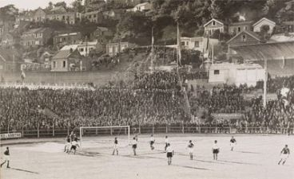
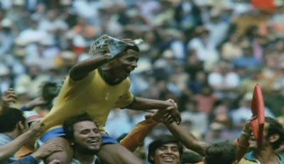
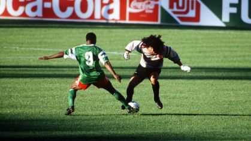
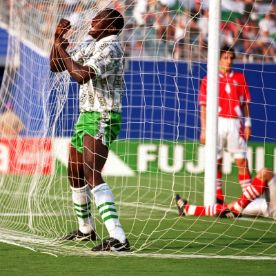
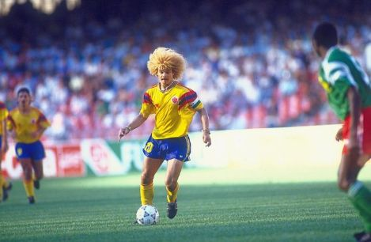
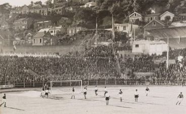
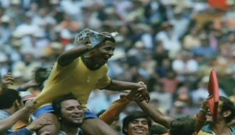
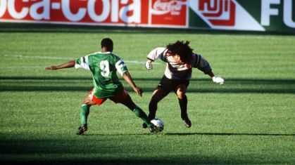
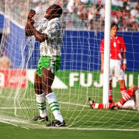
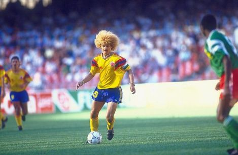

| World Cup Visualizations |
| Blog sur la coupe du monde de football |
1930

2018
| MS BigData 2020-2021 |
| - BENBELLA Othmane |
| - SEMINARIO SANCHEZ Diego Roberto |
| - TIYA DJOWE Antoine |
| World Cup Visualizations |
| Blog sur la coupe du monde de football |
1930
2018
| MS BigData 2020-2021 |
| - BENBELLA Othmane |
| - SEMINARIO SANCHEZ Diego Roberto |
| - TIYA DJOWE Antoine |
 









Le football est un sport qui suscite les passions. Il suffit de voir l'atmosphère qui entoure chaque rencontre entre deux équipes. Les drapeaux dans le stade, les supporters qui célébrent, et la ville se met en couleur pour accueillir une réunion de cet événement. Dans ce sens, la Coupe du monde est sans aucun doute la fête ultime. Les meilleures nations de football du monde se rendent dans un pays avec l'objectif remporter le trophée. Nous présentons dans ce blog un peu d'histoire autour de cet événement.
La Coupe du monde de football trouve son origine en 1904 lors de la création de la Fédération internationale de football association (FIFA) avec les Pays-Bas, la Belgique, la Suède, le Danemark, la Suisse, l'Espagne et la France comme membres. Lors d'une première assemblée, il est décidé d'organiser une compétition internationale en Suisse. Les britanniques s'y opposent. Ce n'est qu'en 1930, sous l'impulsion de son président, Jules Rimet, que la FIFA inaugurera la première édition de la Coupe du monde de football. (Source: Wikipedia).
Cet article présente un classement des équipes ayant participé à une phase de finale de la Coupe du monde de football depuis sa création.
Cette visualisation présente un histogramme dont la longueur et la couleur des barres sont fonction d'un score attribué à chaque équipe. Ce score correspond à la position occupée par l'équipe dans le classement final.
| Europe | |
| North America | |
| South America | |
| Asia | |
| Africa |
Nous nous sommes appuyés sur 3 variables visuelles, à savoir la taille des barres, leurs couleurs et leurs positions. Nous avons opté pour ces choix judicieux afin de contribuer non seulement à la lisibilité du document visuel, mais aussi à son intelligibilité.
La taille des barres traduit quantitativement la position occupée par chaque équipe dans le classement final au terme d'une édition. Le score est calculé à l'aide de la formule suivante:
Le coefficient est calculé en fonction des nombres de participants dans la compétition concernée.
La couleur est utilisée comme une variable nominale. Cet attribut dépend du continent du pays concerné.
Les barres représentant les équipes les plus performantes sont placées en haut du graphe. La position des barres est donc considerée comme étant une variable ordinale.
| Variables Visuelles | Quantitative | Ordinale | Nominale |
|---|---|---|---|
| Taille des barres | X | ||
| Couleur | X | ||
| Position | X |
Cette visualisation est une nuage de bulles portant en abscisse le nombre de buts marqués et
en ordonnée le nombre de buts encaissés par chaque équipe depuis la première édition de la Coupe du
Monde jusqu'en 2018.
La taille des bulles est fonction du nombre total de participations du pays correspondant.
Et, pour chaque pays, la couleur dépend du continent auquel il appartient (même principe que la première
visualisation).
En pointant le curseur sur une bulle donnée, on peut lire le nom du pays, le continent de provenance,
et un couple de valeurs représentant la position occupée sur le nuage (buts marqués ; buts encaissés).
Tout comme la première, cette deuxième visualisation met en évidence 3 variables visuelles à savoir:
- L'aire des bulles: elle est fonction du nombre total d'apparitions dans une phase finale de la Coupe du Monde.
Ainsi, le Brésil ayant le plus participé est représenté par la plus grosse bulle.
- La couleur: elle dépend du continent de provenance.
- La position: cette variable réflète les performances offensives (nombre de buts marqués) et défensives (nombre
de buts encaissés) de chaque équipe. On remarque par exemple qu'un pays comme l'Allemagne qui a encaissé 125 buts et qui a
marqué 226 buts est positionné en haut et à droite du graphe.
Cette dernière visualisation permet d'afficher sur une mappemonde les pays organisateurs de la Coupe du monde de football. Le mouvement de rotation de la mappemonde permet de passer d'un pays ayant organisé une édition donnée vers le pays ayant organisé l'édition suivante. Celui-ci se distingue alors des autres par son changement de couleur (du gris vers le rouge). Les deux variables qui permettent de décrire cette visualisation sont la position sur la carte du pays organisateur et la teinte prise par ce dernier. La position et la teinte sont, dans ce cas précis, des variables nominales.